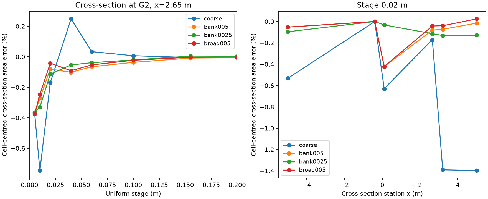
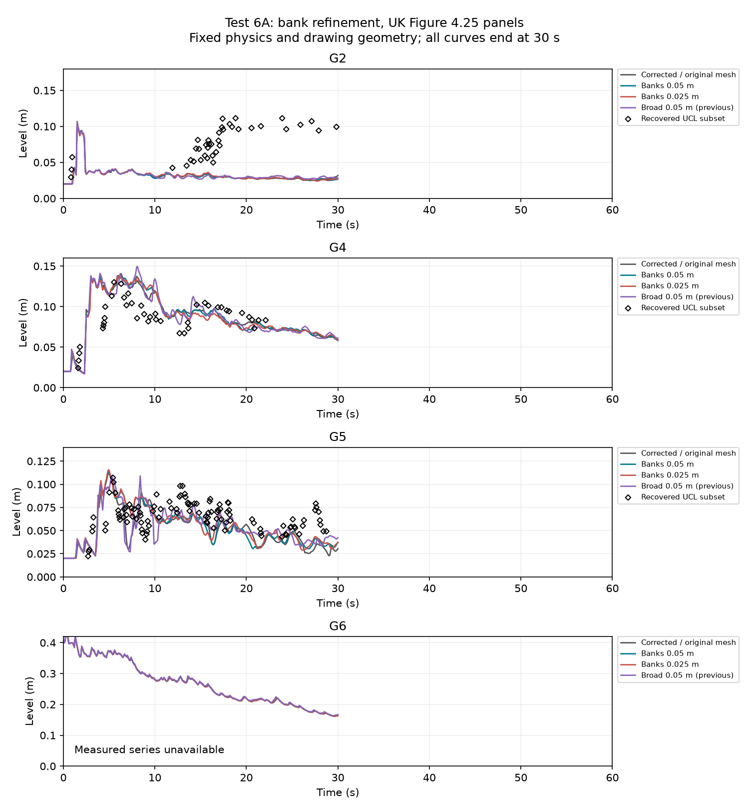
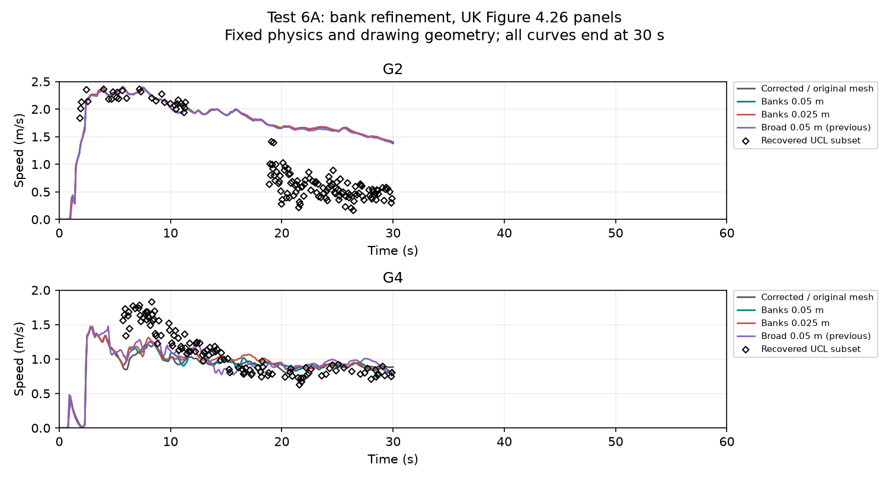
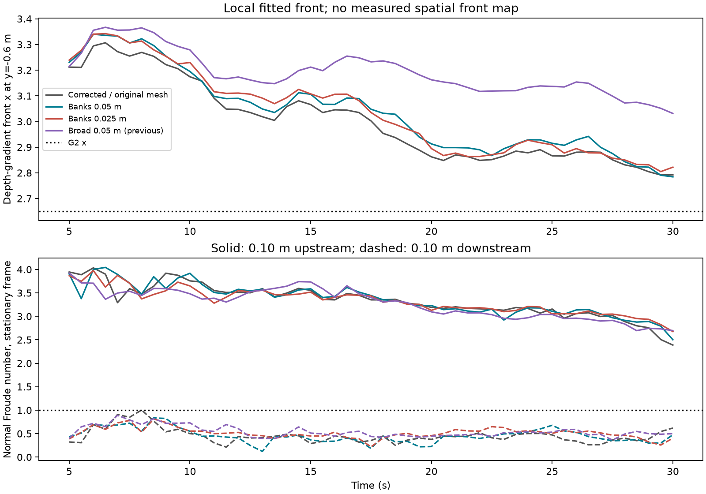
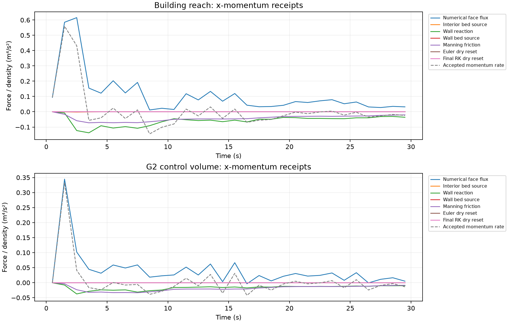

Test 6A: targeted bank resolution and corrected momentum audit
26 October 2026 · Completed 30-second diagnostic study
Targeted bank refinement does not resolve the G2 discrepancy. At bank targets 0.05 m and 0.025 m, G2 level RMSE is 0.05566 and 0.05528 m, versus 0.05552 m on the corrected original mesh; speed RMSE is 0.8368 and 0.8431 m/s, versus 0.8385 m/s. At 20 s the fitted depth-gradient front lies at x = 2.913 and 2.894 m, versus 2.862 m on the original mesh, while G2 is at x = 2.650 m. All three sampled fronts separate supercritical from subcritical normal flow, but G2 remains upstream of the deeper, slower state. The earlier broad refinement moves the fitted front farther downstream to x = 3.162 m. These meshes do not demonstrate convergence.
Controlled comparison
The corrected coarse mesh is compared with two GUI-constrained meshes refining only the bank strips and their 0.4 m graded transitions, through the reservoir and downstream to x=8 m. Targets are 0.05 and 0.025 m; the background target stays 0.10 m. Existing bank toes, outer-wall crests, internal gate and rotated building constraints are retained. The previous broad 0.05 m mesh is context for refinement across the entire flume width. All four cases use the same corrected solver and recovered observations.
FLAT cell closure and MEAN face mode remain the defaults. Full SWE, order 2, global RK2 via Cs=0, CFL 0.4, n=0.01, zero wall drag and Coriolis OFF remain fixed. Initial depths are 0.4 m upstream and 0.02 m downstream, including banks. Area remains 354 m² and initial volume 16.618 m³. New meshes have 71,946 and 98,224 cells versus 61,642 in the coarse mesh. They are regenerated and not strictly nested: neighboring triangulation may change. No dimensions, coefficients or observation timing were fitted.
Each new case completes 30 s / 300 frames and passes depth, continuity and independent-volume checks. This is a diagnostic comparison covering the recovered observation window, not a new 120 s qualification. Original inputs and regression anchors are unchanged.
Effective bank geometry
For each mesh, independent horizontal cuts compare the cell-centred flat-bed wetted area with the exact drawing section. Away from the throat, its flat base is 2.92 m wide and each bank rises 0.155 m over 0.34 m. At a uniform stage η ≤ 0.155 m, exact wetted area is 2.92η+η²/(0.155/0.34). At the throat the section is 1 m wide and rectangular.
The 95th-percentile bed relief of target bank cells falls from 0.04313 m to 0.02444 m and 0.01234 m. At G2 and stage 0.02 m, cross-section area errors are −0.170%, −0.0805%, −0.1137% respectively; the broad 0.05 m mesh gives −0.0419%. Pointwise cut error is not monotonic and does not establish convergence. These uniform-stage diagnostics are not the actual transient water surface or a direct face-flux calculation.

Measured-subset comparison
RMSE uses the unchanged visibility-selected recovered UCL measurement markers and time weights. No other model outputs are plotted. Original complete measurement records and independent digitization review remain outstanding. G6 measured levels remain unavailable.
| Case | G2 level (m) | G2 speed (m/s) | G4 level (m) | G4 speed (m/s) | G5 level (m) |
|---|
| Corrected / original mesh | 0.055521 | 0.838475 | 0.020189 | 0.257508 | 0.020220 |
| Banks 0.05 m | 0.055662 | 0.836836 | 0.022233 | 0.237637 | 0.019216 |
| Banks 0.025 m | 0.055279 | 0.843076 | 0.022567 | 0.237831 | 0.019063 |
| Broad 0.05 m (previous) | 0.055512 | 0.825630 | 0.022943 | 0.223721 | 0.019926 |

Level panels over the full simulated 30 s range

Speed panels with unconstrained vertical display range
Front orientation and normal flow
A local front is detected from the strongest rising depth gradient, independently of the Froude-number threshold: a 0.005 m sample grid, Gaussian smoothing σ = 0.02 m, search x = 2.2–3.5 m over y = −0.8 to −0.4 m, and a robust line fit. Four synthetic tests check detection, orientation, translation and rejection. This differs from the previous cell-constant Fr=1 crossing; positions from the two methods must not be mixed.
| Case | Front x (m) | Fit RMS (m) | Upstream normal Fr | Downstream normal Fr |
|---|
| Corrected / original mesh | 2.8622 | 0.0247 | 3.190 | 0.378 |
| Banks 0.05 m | 2.9127 | 0.0239 | 3.230 | 0.225 |
| Banks 0.025 m | 2.8945 | 0.0184 | 3.128 | 0.458 |
| Broad 0.05 m (previous) | 3.1623 | 0.0140 | 3.096 | 0.444 |
G2 is at x = 2.65 m, y = −0.6 m. Normal-flow states average a short tangent band 0.10 m on each side. Their Froude numbers confirm whether the sampled front separates supercritical and subcritical normal flow. They are not measurements, and unsteadiness, curvature, transverse flow and sampling distance preclude interpreting their 1D jump residual as a conservation failure. Estimated front speed and frame-relative mass, momentum and specific energy are retained in the JSON records with this limitation.

Does the corrected momentum balance close?
Instrumentation is confined to a separate frozen corrected source copy. Enabled and disabled 1 s outputs match each other and the original corrected run bit for bit. The complete instrumented 30 s run also matches all 300 depth and velocity frames exactly. It cannot explain an apparent discrepancy by changing the solution being observed.
Six control volumes cover the entire model, building reach, G2 neighborhood, gate reach, bank strips and G2 containing cell. Receipts retain numerical interior flux, interior bed correction, reflective-wall Riemann reaction, wall bed correction, Manning friction, Euler dry reset and final accepted RK2 dry reset. Both Euler-stage receipts carry half weight. Maximum accepted-momentum closure residual is 5.201e-12 m⁴/s; independently reconstructed saved momentum differs by at most 1.013e-13 m⁴/s.
The original-mesh corrected solution has no unaccounted momentum term at the precision of this audit. In the G2 control volume, mean x-force per density over 15–25 s is +0.02305 m⁴/s² from numerical face flux, −0.01357 m⁴/s² from reflective-wall reaction and −0.01537 m⁴/s² from Manning friction, producing the computed momentum rate of −0.00589 m⁴/s². Both wet/dry momentum-reset terms are exactly zero in that region. The closure check verifies the accounting; it does not prove that the represented geometry, force laws or resulting jump location reproduce the laboratory experiment.

The face flux is additionally split into a centred physical advective reference, centred hydrostatic pressure and a Riemann remainder. This is a defined diagnostic decomposition, not a unique separation of numerical dissipation or a measurement of physical turbulence. Saved mechanical energy is computed independently from depth, velocity and bed; it is not an energy-equation ledger.
Practical implication
Further bank refinement or tuning wall drag is not supported as a demonstrated remedy by these results. The next priority is a source-led reconciliation of the physical geometry and observation coordinates: throat shape/width, obstruction footprint/orientation, gauge positions and gate-release history. The earlier drawing-versus-DEM differences should be resolved from authoritative records rather than fitted to G2. Independently review the recovered measurement markers and obtain the original series if available. Then qualify a short, controlled geometry or release variant only when that evidence identifies a specific change. Retain FLAT/MEAN as the working control; consider a new flux or sub-cell treatment only with an independent test that isolates its deficiency.
This study follows the practical FLAT/MEAN path. The earlier dry-ridge result identifies unresolved sub-cell geometry but does not prove a cause for G2 or make a full VFR rewrite a prerequisite to this diagnosis. No product solver change, fitted wall drag or baseline promotion results from the present study.
Evidence and reproduction
Complete summary · Declared study · Full field equivalence · Momentum closure · Raw cumulative receipts · One-second rates · Observational source patch · Source identities · Mesh resolution · Cross-sections · Stage-storage curves · Front states · Energy diagnostic
Corrected / original mesh: executed input · identity · all metrics · gauges · normal-flow diagnostic
Banks 0.05 m: executed input · identity · all metrics · gauges · normal-flow diagnostic
Banks 0.025 m: executed input · identity · all metrics · gauges · normal-flow diagnostic
Broad 0.05 m (previous): executed input · identity · all metrics · gauges · normal-flow diagnostic
Reproduction prerequisites and sequence. Scripts: audit_runs.py · bank_runs.py · check_ledger.py · cross_sections.py · front.py · instrument.py · progress.py · report.py · test_front.py. Raw HDF5, compiled images and isolated source/build trees remain local. The earlier unrelated porewater test failure is unchanged; no new general engine-suite pass is claimed.